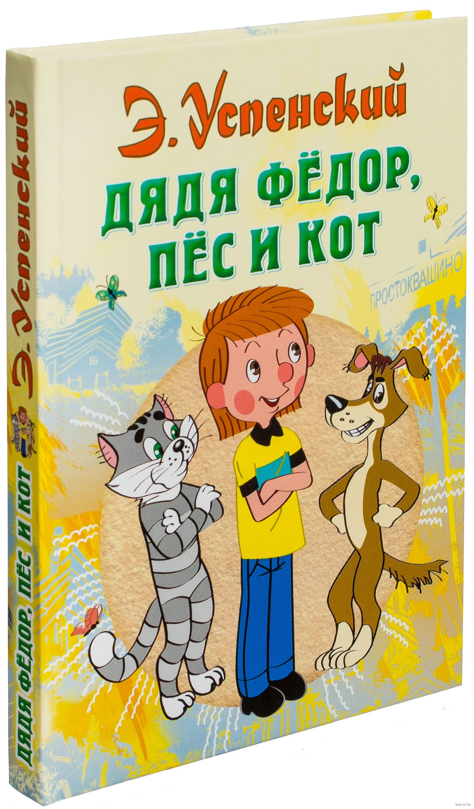

Писатель Эдуард Успенский очень любит животных. И не просто любит, а хорошо понимает. Возможно даже, хотя это тайна, он знает собачий и кошачий языки лучше самого профессора Семина из книги про дядю Федора. Именно поэтому кот Матроскин и пес Шарик хоть и сказочные, но такие живые и настоящие, что теперь все коты и собаки кажутся на них похожими. Зато дядя Федор (мальчик) ни на кого не похож. Таких детей просто не бывает! Самостоятельный, ответственный – чудо-ребенок, мечта всех родителей! Эта троица из Простоквашино уже покорила не одно поколение детей, а сколько ей еще предстоит!
